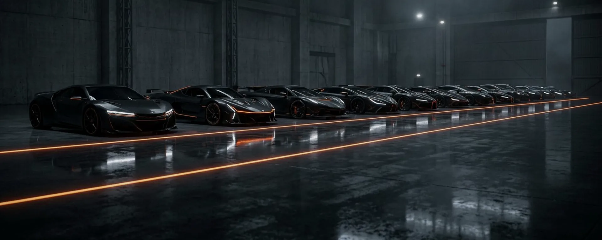

Sound Worlds
Score
Identity
Spatial
Mix
01
Dusk Engine
Score — The Long Dusk 3:42
02
Marble Weather
Sonic Identity — Aurora Labs 1:08
03
Lowland Choir
Ambience — Pale Rider 5:17
04
Bottle & Static
Sound Design — Nordwind 0:54
05
Nightjar Theme
Album Visuals — Nightjar 4:03

